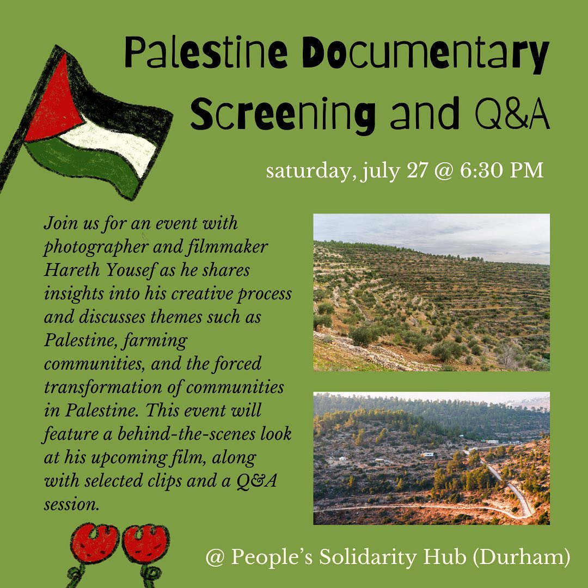
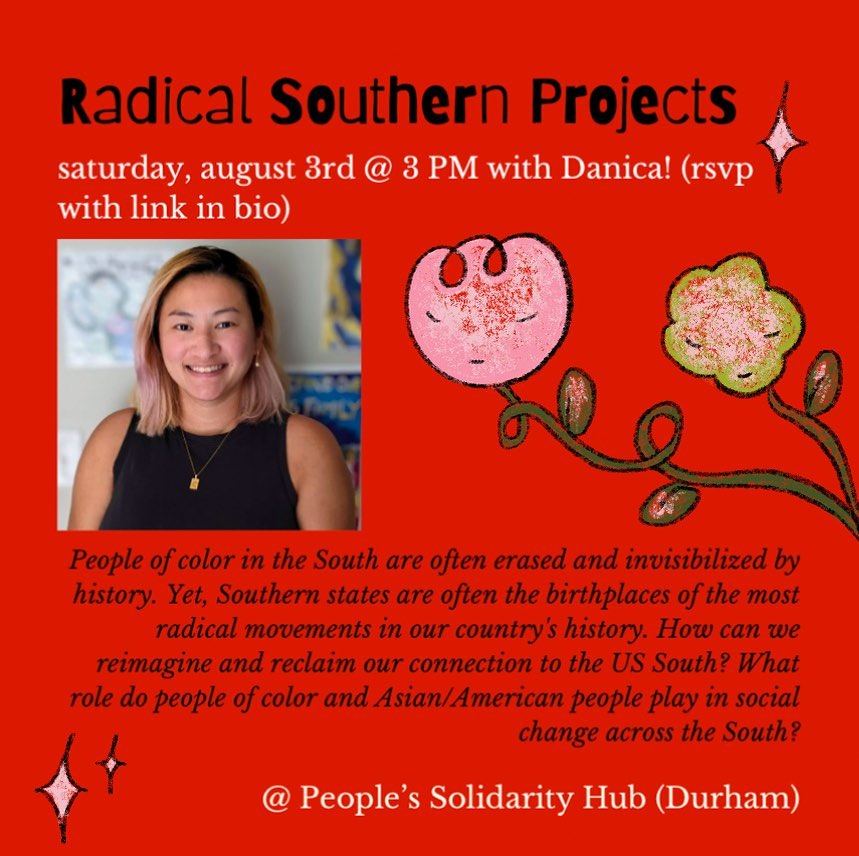

Workshops and Events
Upcoming Events
There are currently no upcoming events. Check back often to see if we do!
Past Workshops and Events
Rest as the Heart of the Movement: Using Disability Justice Frameworks to Move Through Burnout with Sanzari Aranyak
About the HostSanzari Aranyak (he/they) is a disabled and desi southern organizer and artist who’s been burnt out for years. After organizing in college, interning at the smithsonian asian pacific american center, and working at a nonprofit, he’s currently focused on disrupting urgency culture by resting, drawing outside, and spending time with their friends. You can find them online @diasphoriaart for his digital art and tiger balm candles, and find him in the world on a picnic blanket by the trees.
About the WorkshopDrawing on disability justice (DJ) theory, Sanzari will lead a workshop on living with burnout as an artist. This event is grounded in their experiences as a queer, trans, and disabled, Asian American artist and activist. In this workshop, you will learn the fundamentals of disability justice as it helps us move through burnout. As interdependence is key for DJ, we’ll also have space to talk about burnout in our lives, and to create new methods for leaning on each other and making it through. Click here to learn more about what was discussed.
We Tell Our Stories: Art and Oral History Activism with Asian Joy
About the Hosts Ina Liu (she/her) is a visual artist with a background in healthcare. She is passionate about leveraging art for advocacy and equity, with key projects completed with the World Health Organization, UNC Asian American Center, and other social justice organizations. Her art centers on working with the AANHPI community to create pieces that authentically share their stories. Sophie To, MPH (any pronouns) is a PhD candidate in Health Behavior at UNC-Chapel Hill and a field scholar with the Southern Oral History Program (SOHP). They study how media, art, and storytelling can be used to advocate for health equity. Her PhD dissertation explores how Asian American comedians, especially in the South, have told stories about racialization and health. Throughout her time at UNC, Sophie has also been involved with teaching and mentoring. She holds a Bachelor of Arts degree from Vanderbilt University and a Master of Public Health degree from Yale University. Isabel Lu (she/they) is a Chinese American visual artist and health equity researcher born and raised in North Carolina. They studied Western nutritional science as an undergraduate student at Cornell University and then public health and dietetics as a graduate student at UNC Chapel Hill. Realizing that Western perspectives on health and medicine compartmentalize physical, emotional, and communal health, they turned to Traditional Chinese Medicine (TCM) frameworks to explore wellness as a unified whole. Isabel was one of the 2023 Emerging Artists in Residence at Artspace, and is now a studio artist there.
About the Workshop Explore how to leverage art and oral history for activism during this workshop led by the Asian Joy team, Ina Liu, Isabel Lu, and Sophie To. Participants will learn about oral history and art as part of movements and collective memories of movements. This interactive session allows for collaborative storytelling and self-expression, culminating in a group discussion to share insights and reflections on the creative process. Join us for a dynamic workshop where art and storytelling becomes a powerful tool for activism and community building. Click here to learn more about what was discussed.
Palestine Documentary Screening and Q&A with Hareth Yousef

About the Workshop Join us for an event with photographer and filmmaker Hareth Yousef as he shares insights into his creative process and discusses themes such as Palestine, farming communities, and the forced transformation of communities in Palestine. This event will feature a behind-the-scenes look at his upcoming film, along with selected clips and a Q&A session. Don't miss this opportunity to engage with Hareth and explore the powerful narratives within his work.
Radical Southern Projects with Danica

About the Host
Danica is a podcast lover, writer, reader, and hyper-specific playlist curator in NC. Danica has a background in community and youth organizing and is passionate about giving back to the Southern communities that raised her. With an emphasis on racial equity and popular education, she has worked and volunteered across North Carolina and nationally. In their free time, they enjoy finding and trying new spicy noodle recipes.
About the Workshop
People of color in the South are often erased and invisibilized by history. Yet, Southern states are often the birthplaces of the most radical movements in our country’s history. How can we reimagine and reclaim our connection to the US South? What role do people of color and Asian/American people play in social change across the South?
RAD Arts 2024 Final Exhibition
Confronting Injustice: Kashmir and Palestine with Anshu
About the Host
Anshu was born in Pineville, NC, as a child of immigrants from Gujarat, India. Anshu graduated from UNC in May 2025 as a Business major at UNC Kenan-Flagler, with minors in Journalism and Data Science. After completing his undergrad, Anshu is pursuing his Ph.D. in Organizational Behavior. Anshu has been involved with Monsoon (UNC’s premier South Asian American-interest magazine, news, and advocacy platform) for 4 years and served as President/Editor-in-Chief. He is also a member of UNC SJP and other local organizations. Anshu has led teach-ins, community events, and extensively organized at UNC — all with the goal of mobilizing both the South Asian American and UNC community at large towards social change.
About the Workshop
Join us for a teach-in about the histories, peoples, and movements of Kashmir and Palestine. This teach-in seeks to foster dialogue about these two regions. We’ll go over the history of the Kashmir region, ongoing struggles, have an interactive educational activity, and print radical art — all while contextualizing both the Kashmiri and Palestinian struggle against settler-colonialism and the War on Terror, and within social movement theory.
Weaving Our Collective Dreamscape: Rational Practice for Resistance and Healing with Huiyin Zhou
About the Host
Born and raised in the industrial hub of Dongguan, China, huiyin zhou 徽音 (they/ta/她) is a transnational queer feminist organizer and community-based photographer, writer, multimedia artist and cultural producer. huiyin co-directs the Chinese Artists and Organizers (CAO) Collective with Laura Dudu.
A diasporic bird constantly up- and re-rooting themselves, they are currently based in Durham, NC, and NYC. They work with digital and analog photography, text, installation, and performance with a relational, reciprocal praxis. Creating with intimate and tender sensibilities, huiyin explores themes related to queer feminism, intimacy, memory, diaspora, and community building.
About the Workshop
What are your wildest dreams and worst nightmares? What alternative knowledges can we access through dreaming and writing together? Join huiyin zhou (they/ta/她) for an artist talk and workshop on dreaming as a relational method and collective writing practice. Participants are invited to share bedtime stories, dreams, and other experiences in relation to sleep/rest through individual and collective writing activities and facilitated conversations.
The stories co-created in this workshop will be included in huiyin and Laura Dudu’s long-term social practice project, One Thousand and One Nights: A Queer Journey of Dreams & Diaspora”, culminating in a collective dream archive.
Flowers While We're Here: Playful Art as Positive Affirmations with Mx. Princexx Peritwinkle
About the Host
Mx. Princexx Peritwinkle is a Blk trans drag artist from The South. Ze is a sewist and creative costumer. Ze enjoys prison abolition work and cultural organizing for queer peoples. In the ballroom scene, Princexx 007 has been recognized and awarded for zir Bizarre wearable art designs, both locally and regionally. Zir inspiration in art, are the countless Blk trans women who have made Drag, Burlesque, and the Ballroom scene the art forms we know them as today.
About the Workshop
Give them their flowers while they’re here is a phrase we hear often; but we will be putting it to practice. Self affirmations, reminding yourself of your self worth and self love, is so important during this time. And we can practice self-love through art affirmations today! We will be creating take home flower crowns and also sharing affirmations with each other and to create a larger flower crown for an art piece for our group. This piece is inspired by the iconic picture of Marsha P Johnson adorned with a flower crown.